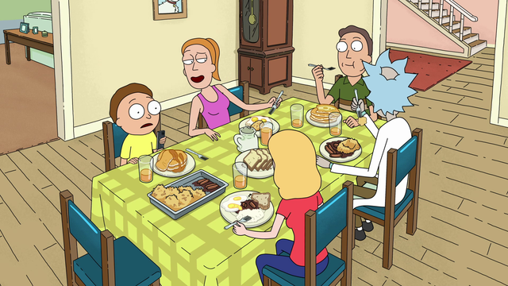
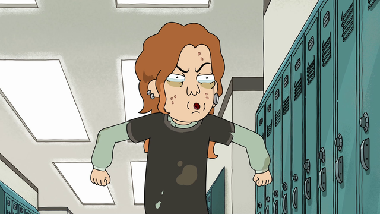
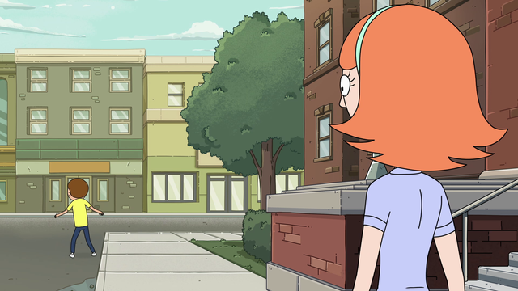

FYC://Rick.And.Morty.S04.COMPLETE.1080p.Bluray.NVENC.x264-SURGE
=-=-=-=-=-=-=-=-=-=-=-=-=-=-=-=-=-=-=

Home
Download/Stream:
Magnet
Torrent
Play now (Stream)
Descption:
Rick.And.Morty.S04.COMPLETE.1080p.Bluray.NVENC.x264-SURGE
IMDB: https://www.imdb.com/title/tt2861424
Screenshots



Media Info
General
Unique ID : 80907492612409832420827586595333928472 (0x3CDE375DC83EB9FBA0DD2853ACD0F618)
Complete name : Rick.And.Morty.S04E01.1080p.Bluray.NVENC.x264-SURGE.mkv
Format : Matroska
Format version : Version 4
File size : 354 MiB
Duration : 22 min 1 s
Overall bit rate mode : Variable
Overall bit rate : 2 250 kb/s
Movie name : Rick.And.Morty.S04E01.1080p.Bluray.NVENC.x264-SURGE
Encoded date : UTC 2022-08-22 14:41:32
Writing application : HandBrake 1.5.1 2022011000
Writing library : Lavf58.76.100
ErrorDetectionType : Per level 1
Video
ID : 1
Format : AVC
Format/Info : Advanced Video Codec
Format profile : Main@L4.1
Format settings : CABAC / 4 Ref Frames
Format settings, CABAC : Yes
Format settings, Reference frames : 4 frames
Codec ID : V_MPEG4/ISO/AVC
Duration : 22 min 31 s
Bit rate mode : Variable
Maximum bit rate : 6 900 kb/s
Width : 1 920 pixels
Height : 1 080 pixels
Display aspect ratio : 16:9
Frame rate mode : Constant
Frame rate : 23.976 (24000/1001) FPS
Color space : YUV
Chroma subsampling : 4:2:0
Bit depth : 8 bits
Scan type : Progressive
Default : Yes
Forced : No
Color range : Limited
Color primaries : BT.709
Transfer characteristics : BT.709
Matrix coefficients : BT.709
Audio
ID : 2
Format : AAC LC
Format/Info : Advanced Audio Codec Low Complexity
Codec ID : A_AAC-2
Duration : 22 min 1 s
Channel(s) : 2 channels
Channel layout : L R
Sampling rate : 48.0 kHz
Frame rate : 46.875 FPS (1024 SPF)
Compression mode : Lossy
Delay relative to video : -21 ms
Title : English
Language : English
Default : Yes
Forced : No
Text
ID : 3
Format : ASS
Codec ID : S_TEXT/ASS
Codec ID/Info : Advanced Sub Station Alpha
Duration : 21 min 57 s
Compression mode : Lossless
Title : English
Language : English
Default : No
Forced : No